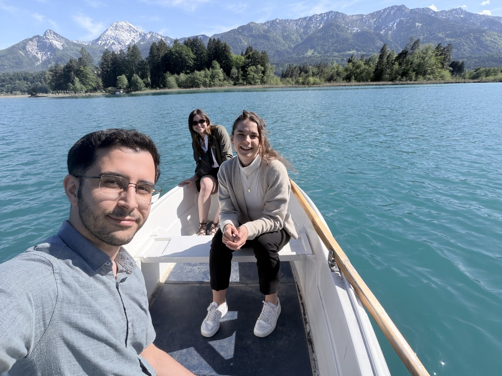

Camila gave an invited talk at ImVis2026, the 16th Workshop on Advanced Imaging and Visualization, held at Faak am See in Carinthia as part of the annual retreat of Nassir Navab's CAMP chair at TU Munich. Together with Amir and Helena, we spent a beautiful few days at the lake with the CAMP PhD students, between talks, barCAMP sessions and a lot of mountain air.